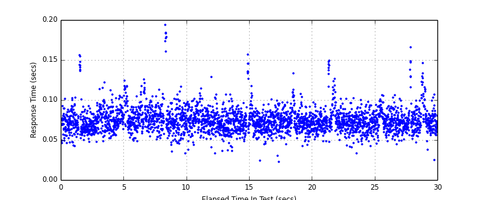
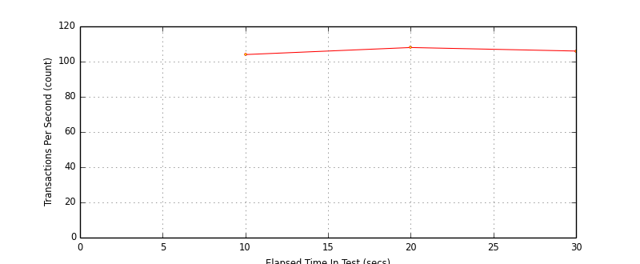
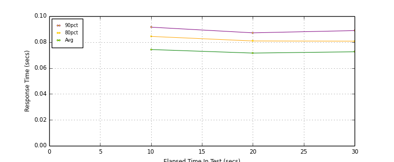
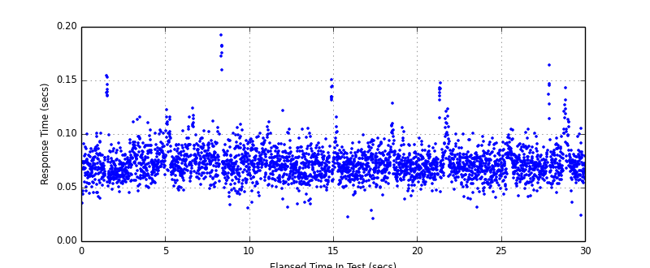

Performance Results Report
Summary
transactions: 3191
errors: 0
run time: 30 secs
rampup: 0 secs
test start: 2014-03-09 16:04:42
test finish: 2014-03-09 16:05:12
time-series interval: 10 secs
workload configuration:
| group name | threads | script name |
|---|
| user_group-1 | 8 | v_user.py |
All Transactions
Transaction Response Summary (secs)
| count | min | avg | 80pct | 90pct | 95pct | max | stdev |
|---|
| 3191 | 0.023 | 0.075 | 0.084 | 0.091 | 0.100 | 0.194 | 0.016 |
Interval Details (secs)
| interval | count | rate | min | avg | 80pct | 90pct | 95pct | max | stdev |
|---|
| 1 | 1040 | 104.00 | 0.033 | 0.076 | 0.086 | 0.094 | 0.104 | 0.194 | 0.018 |
| 2 | 1081 | 108.10 | 0.023 | 0.073 | 0.083 | 0.089 | 0.096 | 0.157 | 0.014 |
| 3 | 1062 | 106.20 | 0.025 | 0.074 | 0.082 | 0.091 | 0.101 | 0.166 | 0.015 |
Graphs
Response Time: 10 sec time-series
Response Time: raw data (all points)

Throughput: 5 sec time-series

Custom Timer: Example_Timer
Timer Summary (secs)
| count | min | avg | 80pct | 90pct | 95pct | max | stdev |
|---|
| 3183 | 0.021 | 0.073 | 0.082 | 0.090 | 0.098 | 0.193 | 0.015 |
Interval Details (secs)
| interval | count | rate | min | avg | 80pct | 90pct | 95pct | max | stdev |
|---|
| 1 | 1040 | 104.00 | 0.031 | 0.074 | 0.084 | 0.092 | 0.101 | 0.193 | 0.017 |
| 2 | 1081 | 108.10 | 0.021 | 0.072 | 0.081 | 0.087 | 0.094 | 0.151 | 0.014 |
| 3 | 1062 | 106.20 | 0.024 | 0.073 | 0.081 | 0.089 | 0.099 | 0.164 | 0.015 |
Graphs
Response Time: 10 sec time-series

Response Time: raw data (all points)

Throughput: 10 sec time-series